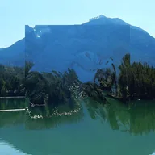

Mappa di spostamento

Usa i colori del livello per spostare quelli sottostanti, poi si nasconde; con Mappa impostata su Livello sottostante, sposta questo livello usando quello sottostante.
Impostazioni
| Impostazione | Tipo | Intervallo | Predefinito |
|---|---|---|---|
| Spostamento | Punto (X, Y) | Da -5000 px a 5000 px | 0 px, 0 px |
| X | Scelta | R, G, B | R |
| Y | Scelta | R, G, B | G |
| Bordi | Scelta | Ripeti, Specchia, Trasparente, Affianca | Specchia |
| Dal centro | Attivo o disattivo | – | Disattivo |
| Inverti | Attivo o disattivo | – | Disattivo |
| Mappa | Scelta | Questo livello, Livello sottostante | Questo livello |